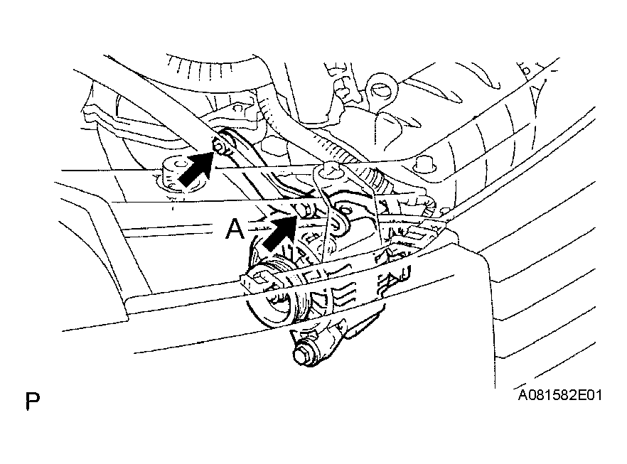

Charging (1NZ-FE): Generator: Installation
- INSTALL GENERATOR ASSEMBLY
- Temporarily install the generator with bolt B.
- Temporarily install the adjusting bar with bolt A, and tighten the nut to the specified torque.

Courtesy of © TOYOTA, LICENSE AGREEMENT TMS1002Torque: 11 N*m (112 kgf*cm, 8 ft.*lbf)
- Temporarily install the generator V-belt onto each pulley.
- Insert the adjusting bar between the engine mounting bracket and generator. Push the adjusting bar towards the vehicle front to adjust the V-belt tension.NOTE: Do not insert the adjusting bar between the oil control valve and generator because it could damage the oil control valve.
- First tighten bolt A, and then tighten bolt B.
Torque: 18.5 N*m (189 kgf*cm, 14 ft.*lbf) for bolt A
54 N*m (551 kgf*cm, 40 ft.*lbf) for bolt B
- Install the wire harness clamp.
- Connect the generator connector.
- Install the generator wire with the nut.
Torque: 9.8 N*m (100 kgf*cm, 7 ft.*lbf)
- Install the terminal cap.
- ADJUST GENERATOR V BELT (see INSTALLATION )
- CONNECT CABLE TO NEGATIVE BATTERY TERMINAL